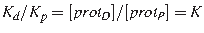
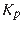
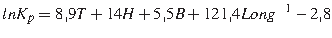
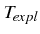
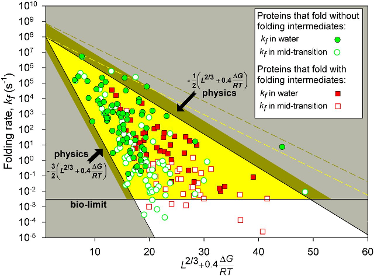

Desde un punto de vista químico podríamos definir la reaccióón de plegamiento (P), opuesta a la desnaturalización (D), en estos términos (donde K es la constante de equilibrio):
|  | (2.1) |
Independientemente de que no sepamos todavía plegar proteínas con precisión, sí que podemos en ciertos casos estimar cuanto tardarán en plegarse a partir de su secuencia. Plaxco et al. (1998) demostraron que la velocidad de plegamiento () de dominios está estrechamente correlacionada con el orden de contactos , es decir, la media de separación en secuencia entre residuos del dominio ya plegado que están en estrecho contacto.
Por otro lado, Gong et al. (2003) encontraron otra fuerte correlación entre el contenido
en estructura secundaria de una secuencia de aminoácidos, su longitud, y su velocidad de plegamiento.
La función que encontraron tiene esta forma (donde T son y B son fracciones de residuos de dos
tipos de giros de
estructura secundaria,
H de  -hélice y Long es la longitud de la secuencia):
-hélice y Long es la longitud de la secuencia):
|  | (2.2) |
donde se mide en . Estas correlaciones sugieren que el factor limitante del proceso de plegamiento es la formación de elementos de estructura secundaria.
El problema de estos métodos es que exigen conocer la estructura de la proteína en cuestión, aunque se podrían aplicar usando predicciones de estructura secundaria y de orden de contactos.
|

|